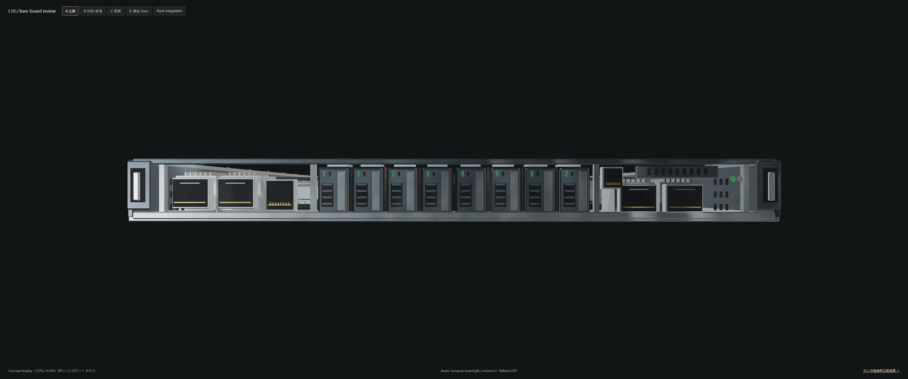
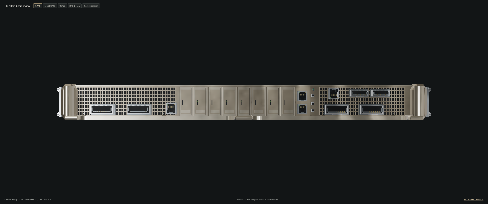
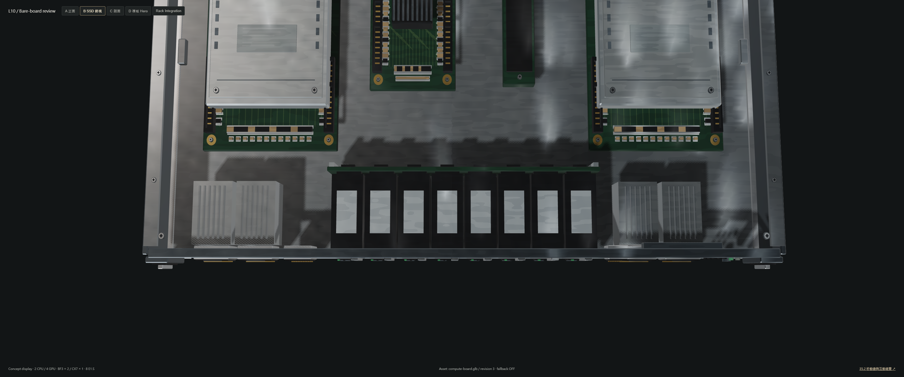
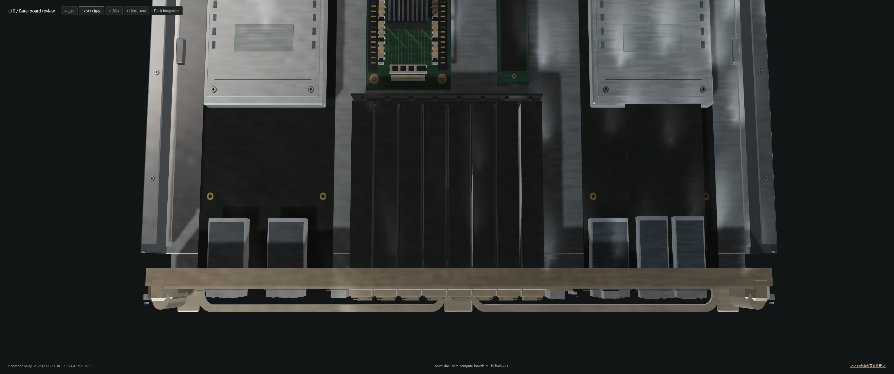
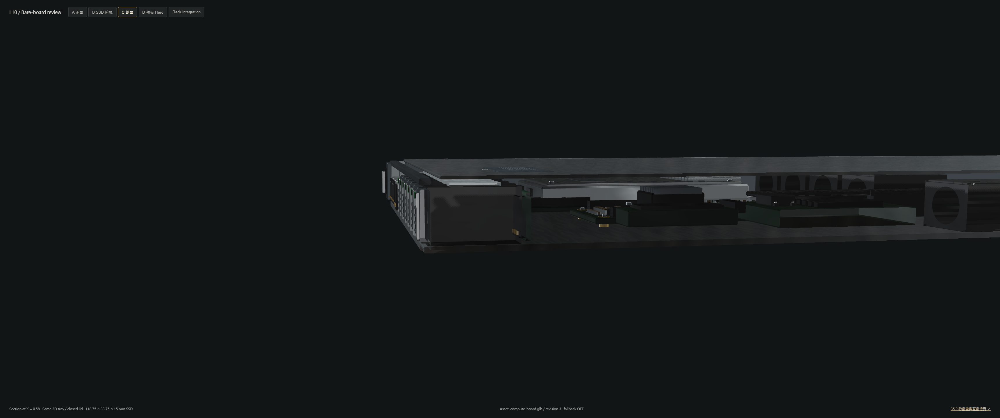
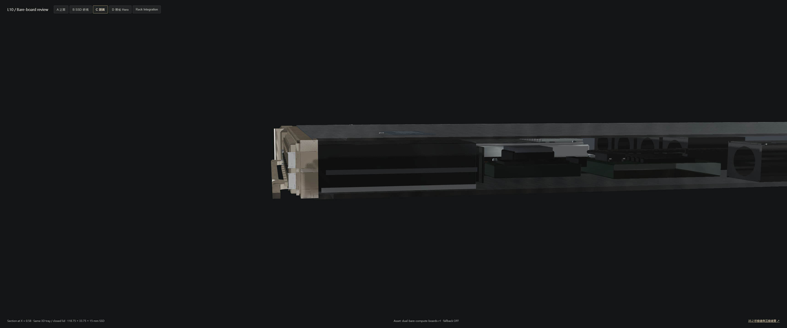
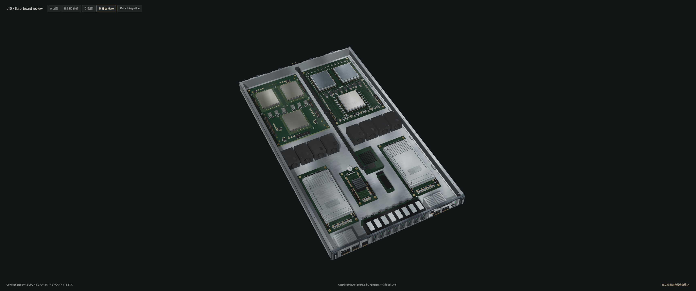
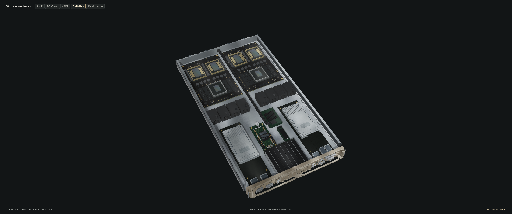
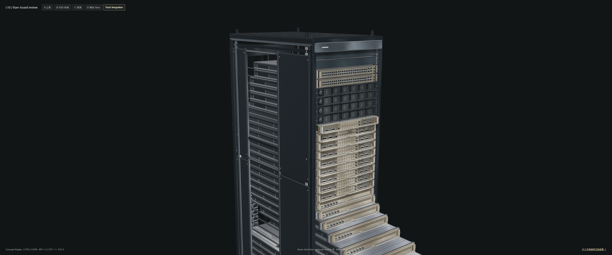
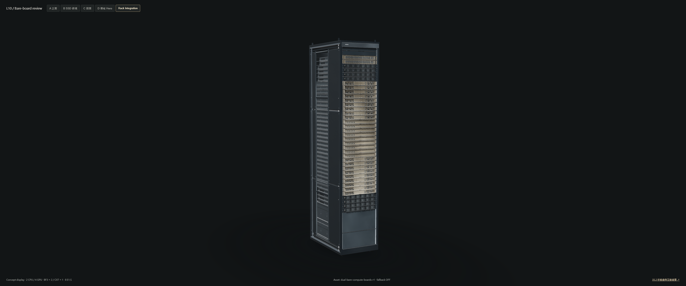

實際 Chromium / WebGL，3440 × 1440 原生 canvas。每組使用同一鏡頭、進度、光照、曝光、tone mapping；Before 的硬體 JS / GLB 直接讀取 Git 基準。C 為同模型的 X=0.58 幾何剖切，閉合上蓋維持原高度。未使用 AI 圖片或廠商照片當貼圖。照片級 90 分驗收仍為 NOT ACCEPTED。









